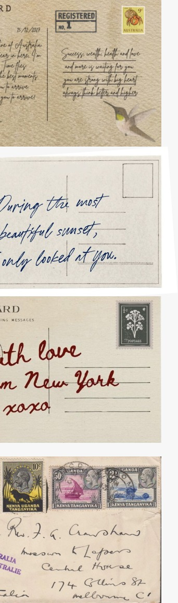
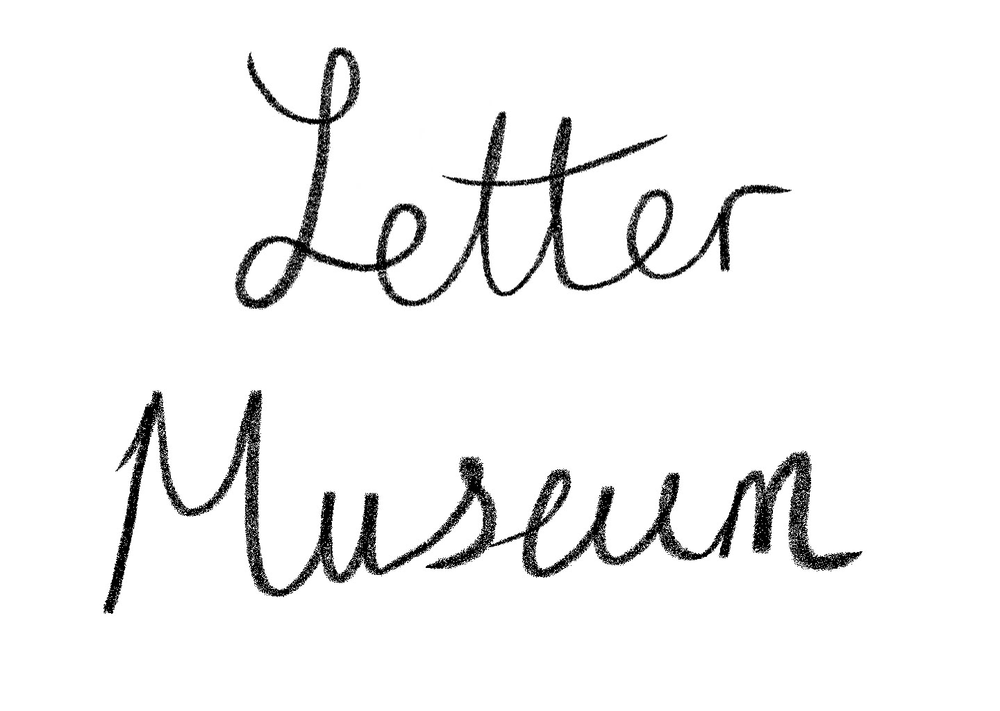
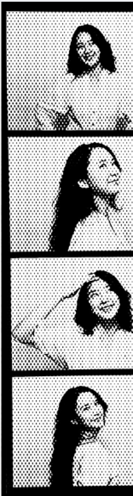
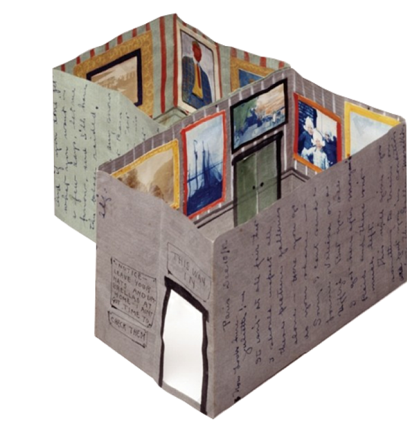
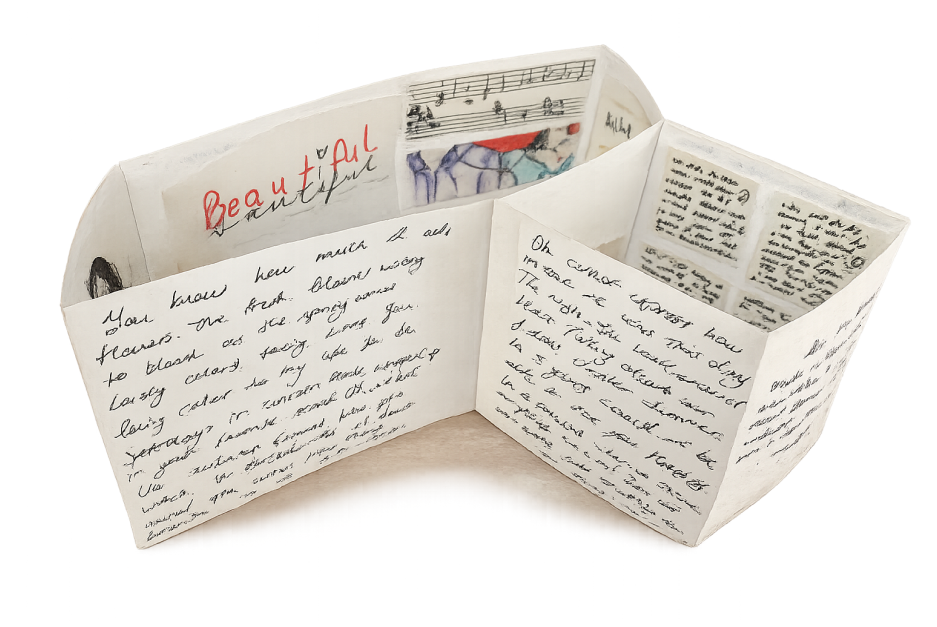

fold your own museum of photos and words, then send it.



fold your own museum of photos and words, then send it.

WHERE THIS BEGAN
the story behind what you're about to create
In 1913, cartoonist Alfred Frueh sent his wife Giuliette a love letter unlike any other. When unfolded, it revealed a tiny handmade art gallery — paintings on the walls, a coat-check sign by the door, her name above the entrance.
It wasn't just a letter. It was a museum built entirely out of love.
That letter still exists today, preserved in the Smithsonian's Archives of American Art. The Meraki Archive is our small tribute to Alfred Frueh — and our invitation for you to make your own.
— credit always to Alfred Frueh, 1913

